I wrote the convolution function in two ways: one using four nested loops and another using two loops with NumPy. Both methods add zero padding around the image edges to handle boundaries properly.
# 4 for loops (basic approach)
for i in range(h):
for j in range(w):
for ki in range(kh):
for kj in range(kw):
result[i, j] += padded[i+ki, j+kj] * kernel[ki, kj]
# 2 for loops (using NumPy to speed things up)
for i in range(h):
for j in range(w):
result[i, j] = np.sum(padded[i:i+kh, j:j+kw] * kernel)
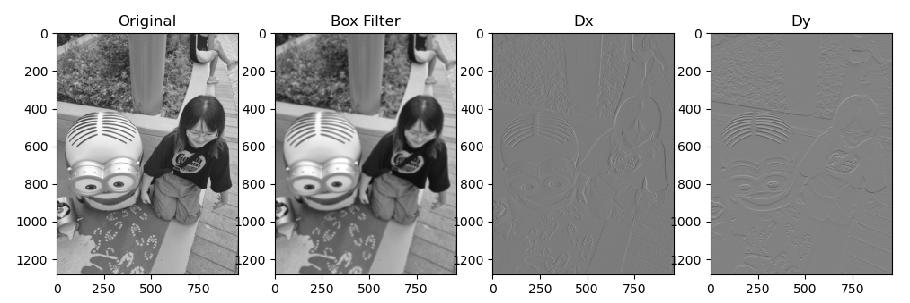
Results of different filters: original image, 9×9 box filter, Dx filter (finds vertical edges), and Dy filter (finds horizontal edges).
Comparing with Built-in Function
The above implementation gives the same results as scipy.signal.convolve2d using the same settings upon checking with np.allclose() which returned True.
Runtime Analysis:
4-loop version: Slowest because it has lots of nested Python loops, increasing overhead significantly
2-loop version: Faster than the 4-loop version since NumPy does the inner calculations more efficiently
scipy version: Fastest because it's written in C
Edge Handling:
At image edges, we need to add extra pixels. I used zero-padding, while scipy uses mirror padding (copying edge pixels). Zero-padding is easier to implement but can create dark edges, while mirror padding looks more natural.
What Each Filter Does:
Box Filter (9×9): Smooths the image by averaging nearby pixels (blur effect)
I used basic edge-finding filters on the cameraman image. The math behind this is calculating derivatives: Dx = [[-1, 0, 1]] for horizontal changes and Dy = [[-1], [0], [1]] for vertical changes. Then I combined them using the formula:
Gradient Magnitude = √(Dx² + Dy²)
Original Cameraman Image
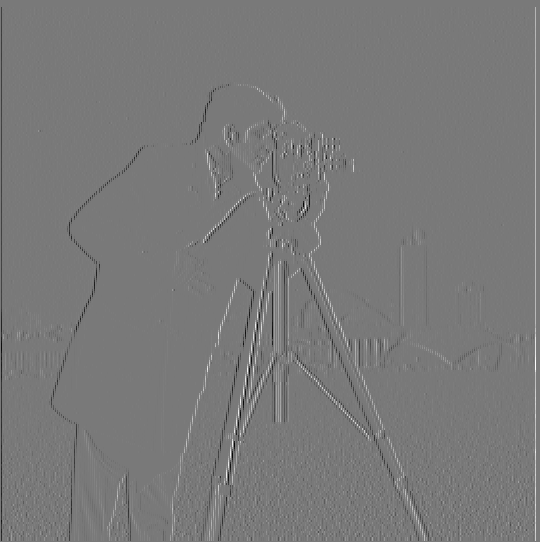
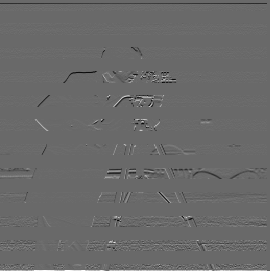
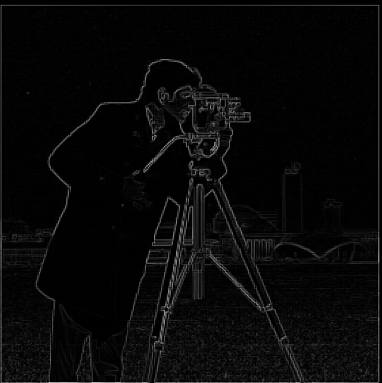
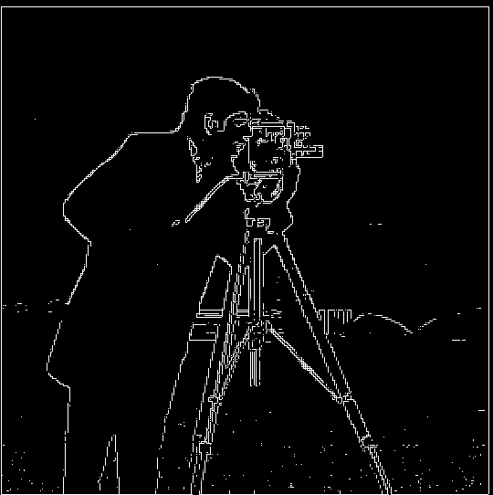
Left to right: horizontal edges, vertical edges, combined edges, final edge image (threshold=60).
Picking the Right Threshold:
I chose threshold = 60 after trying different values. This value catches the important edges (camera, tripod, buildings) while ignoring most of the noise in the background (grass, sky, etc).
Results:
The Dx filter shows vertical objects like the camera and tripod really well, while the Dy filter catches horizontal objects like building roofs. Combining them gives us all the relevant edges and the final cleaned-up version shows just the main shapes.
1.3 Derivative of Gaussian (DoG) Filter
The basic edge detection in Part 1.2 was too noisy, so we will combine it with Gaussian blurring to smooth it out in this part. I made 2D Gaussian filters using cv2.getGaussianKernel(), then created special Derivative of Gaussian (DoG) filters by combining the Gaussian with the edge filters.
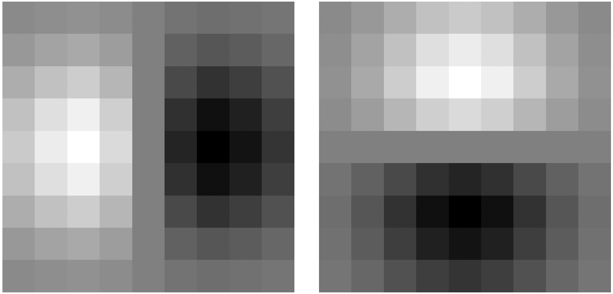
Derivative of Gaussian filters: DoGx (left) and DoGy (right).
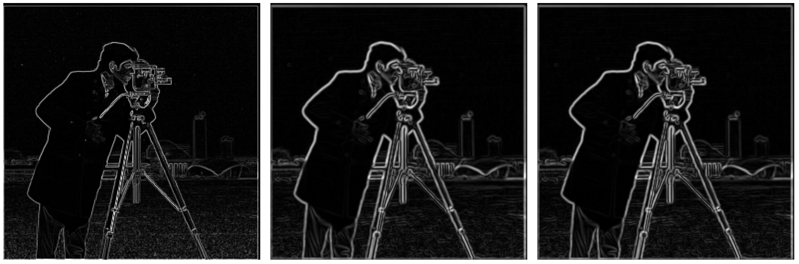
Comparison: basic edge detection (left), blur then find edges (middle), and DoG filter (right).
What we can see:
Less Noise: Blurring first gets rid of a lot of the unwanted noise in the edge images
Same Results: Doing blurring followed by edge detection gives almost the same result as using the DoG filter directly
Why This Works Better:
Basic edge detection using finite difference operator applies simple derivative filters in the x and y directions to compute gradients, and then thresholds the gradient magnitude to detect edges. While this successfully captures strong edges, it also responds to small brightness fluctuations (like the ones in the grass patch in cameraman), making it very sensitive to noise and producing cluttered results. The DoG method improves this by first blurring the image at two different scales and subtracting the results, which suppresses small high-frequency details while preserving meaningful structures. Hence, DoG acts like a noise filter that emphasizes important edges while ignoring irrelevant variations, giving cleaner and more reliable edge maps compared to the raw finite difference approach.
Part 2 — Fun with Frequencies!
Making images sharper, creating hybrid images, and blending photos seamlessly.
2.1 Image "Sharpening"
In this part, we try out "unsharp masking" - a way to make images look sharper by adding back high-frequency details. This can be represented by:
Sharpened = Original + α × (Original - Blurred)
Where α controls how much sharpening to apply, and (Original - Blurred) gives us the high-frequency details.
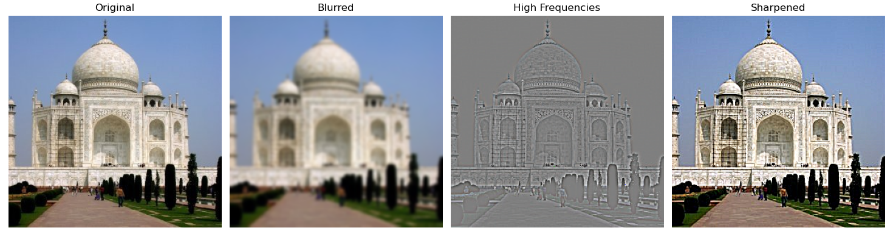
Sharpening process: original image, blurred version, high frequencies (offset +128 for display), and final sharpened result (α=1.5, σ=2.0).
Testing the Limits:
Now I try sharpening an image after making it blurry to see if I could get the original back.
Test: original sharp image, artificially blurred version, and sharpening result. Some improvement but can't get back to original quality.
Why You Can't Perfectly Fix Blurry Images:
Blurring acts like a low-pass filter. It smooths out high frequencies, which are where the details live. Once those high frequencies are removed, the pixels no longer contain that detail. Sharpening can only take what’s left in the blurred image and boost it and it can’t generate the missing information. That’s why the sharpened result looks “crisper” than the blurry one, but still nowhere near the original. On top of that, sharpening can't distinguish between detail and noise: any noise in the blurred image gets boosted too, which can make the result look grainy or unnatural.
2.2 Hybrid Images
In this part, I created hybrid images that look different depending on how far away you are. This is done by combining the low frequencies from one image (what you see from far away) with the high frequencies from another image (what you see up close).
Derek + Nutmeg:
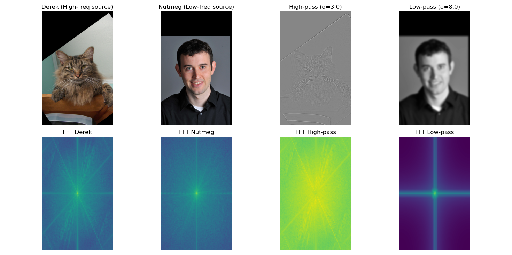
Complete process for Derek + Nutmeg hybrid (σ₁=3.0, σ₂=8.0): top shows images and filtered parts, bottom shows frequency analysis proving the method works.
More Hybrid Examples:
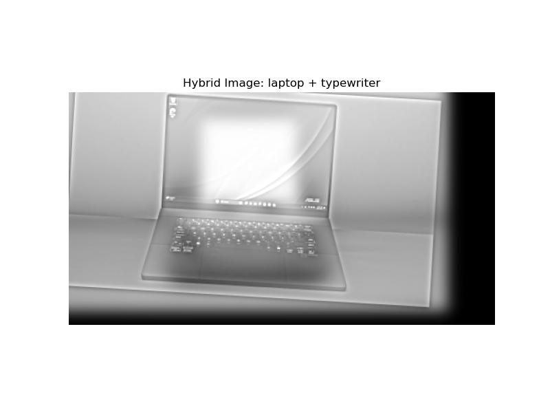
Laptop + Typewriter hybrid
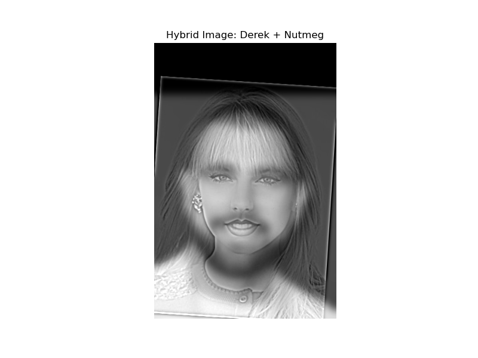
Taylor Swift and Travis Kelce hybrid
Choosing the Right Settings:
I experimented with different sigma values. Lower σ₁ (1-4) keeps fine details for close viewing, while higher σ₂ (6-12) creates smooth base images for far viewing. The difference between these values controls how the hybrid effect works.
2.3 Gaussian & Laplacian Stacks
I built image "stacks" - different versions of the same image with different amounts of blur. Gaussian stacks have progressive blurring, while Laplacian stacks store the differences between blur levels (different frequency ranges).
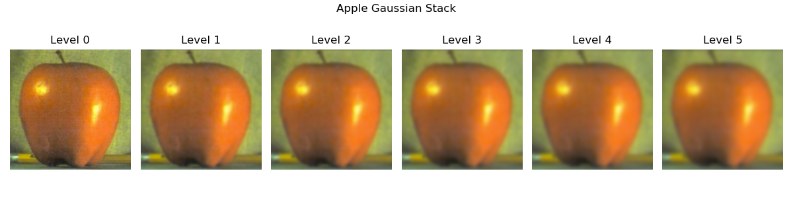
Apple Gaussian stack: 6 levels showing how details gradually disappear with more blur.
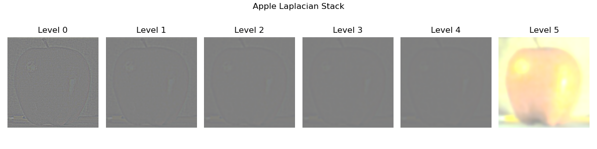
Apple Laplacian stack: each level shows different detail sizes, with the final level being the blurriest base.
2.4 Multiresolution Blending (a.k.a. the oraple!)
In this part, I learned how to blend images without visible seams using multi-resolution blending. The key idea is to blend different detail levels separately, using progressively blurrier masks for each level.
Classic Apple + Orange Blend:
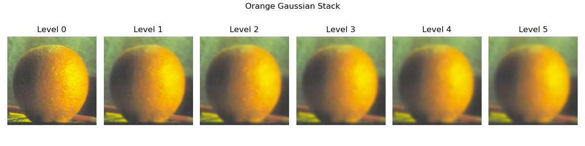
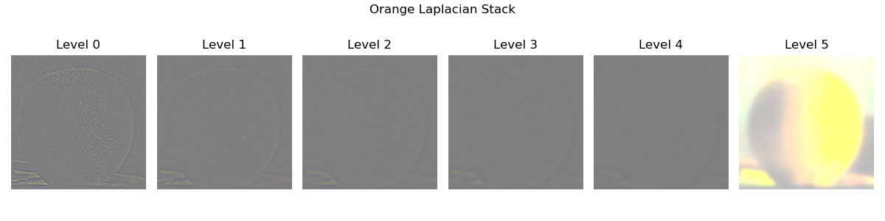
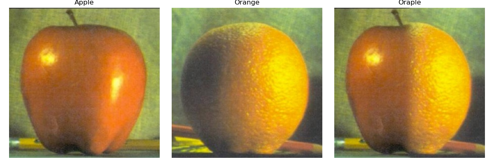
The complete Oraple process: Apple blur levels, Orange blur levels, Apple detail levels, Orange detail levels, and final seamless blend.
My Custom Blends:
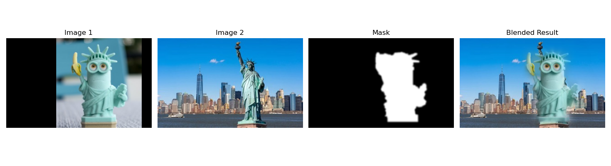
Minion + Statue of Liberty using automatic object detection to create the mask.
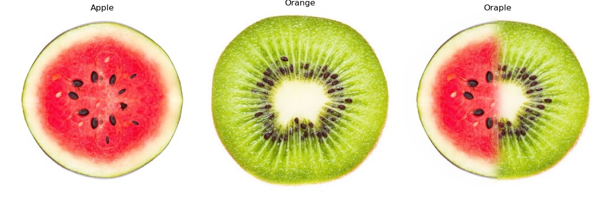
Watermelon + Kiwi with a circular blend area.
How I Made the Irregular Mask:
For the Minion + Statue of Liberty blend, I used a computer vision technique:
Automatic Object Detection (GrabCut):
With GrabCut, I started by drawing a rough rectangle around the object I wanted to keep. The algorithm then automatically analyzed the region and separated the object from the background, estimating the exact boundaries. To refine the result, I let it run multiple times (about 5 iterations), which improved accuracy by gradually tightening around the true edges. Afterward, I cleaned up small errors and feathered the edges so the cutout looked natural and smooth. Finally, the extracted object could be resized or moved around to fit better into a new composition. However, the blended picture still doesn't look at good (you can see the hand of the original statue sticking out and things like that), but the idea is cool.